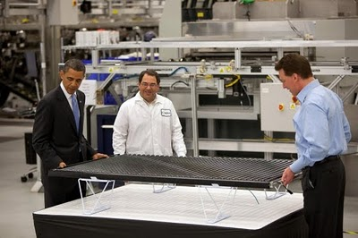
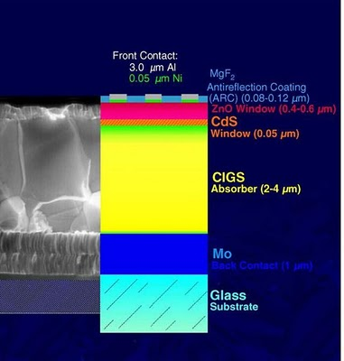
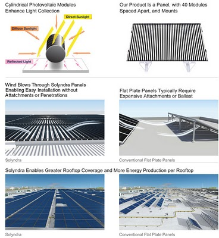

Navigate this Report
Back to Stimulus & Regulation Index
1. Background
2. Acronyms/Definitions
3. Solyndra Time Line
4. Benefits
5. Risks/Issues
6. Success Criteria (of a government support of renewable energy)
7. Next Steps
8. Companies/Organizations
9. Competitors How were other CIGS firms funded and how are they faring?
10. Links
1.Background
- Solyndra was a
manufacturer of cylindrical panels of CIGS thin-film solar cells based
in Fremont, California. The company suspended all of its operations as
of August 2011 leaving behind the United States government as its
largest creditor.
- In May 2010, the company was personally promoted by President Obama
in his visit as a model for government investment in green technology,
and was also visited by former California governor, Arnold
Schwarzenegger.
 Obama visiting Solyndra on May 26, 2010 Picture from White House Blog
- A $535 million loan guarantee was applied for under the Bush
administration but the loan was denied. The $535 million loan guarantee
was later granted by the Obama administration. Private investors also
invested more than $1 billion into the company. The company's
investors and executives had made substantial donations to Obama's
campaign, and the company had also spent a large sum of money on
lobbying.
- Due to price pressure in the period of constructing the new plant,
the Fab 2, the company had shut down its original plant, Fab 1, and
simultaneously reduced its staff to approximately 1,100 employees.
- In early Sep 2011, the company ceased all business activity, filed
for Chapter 11 bankruptcy, and laid off all employees. The company is
also being sued by employees who were abruptly laid off.
- On Sep 8, 2011, Federal Bureau of Investigation Agents executed
multiple search warrants at the company's headquarters in Fremont as
part of an investigation by the Department of Energy's Office of the
Inspector General.
- Jon Stewart's funny retelling of how the Obama administration
approved a $535 million loan guarantee to the solar panel producer
connected to an Obama fundraiser despite a flawed business model and
bureaucrats sounding alarms. It's the eight-minute version of how the
administration created an avoidable political disaster for itself at an
inopportune time.
{kind=link}
2. Acronyms/Definitions
- 1703
- Section 1703 of Title XVII of the Energy Policy Act of 2005
authorizes the U.S. Department of Energy to support innovative clean
energy technologies that are typically unable to obtain conventional
private financing due to high technology risks. In addition, the
technologies must avoid, reduce, or sequester air pollutants or
anthropogenic emissions of greenhouse gases. Technologies we will
consider include: biomass, hydrogen, solar, wind/hydropower, nuclear,
advanced fossil energy coal, carbon sequestration
practices/technologies, electricity delivery and energy reliability,
alternative fuel vehicles, industrial energy efficiency projects, and
pollution control equipment. Technologies with more than three
implementations that have been active for more than five years are
excluded.
- 1705 -
The American Recovery and Reinvestment Act of 2009 amended the Loan
Guarantee Program’s authorizing legislation by adding Section 1705 to
EPAct. Section 1705 is a temporary program designed to address the
current economic conditions of the nation. It authorizes loan guarantees
for certain renewable energy systems, electric power transmission
systems and leading edge biofuels projects that commence construction no
later than September 30, 2011.
- ATVM - Advanced Technology Vehicles Manufacturing (ATVM) Loan Program
- Section 136 of the Energy Independence and Security Act of 2007
established an incentive program – the ATVM – consisting of direct loans
to support the development of advanced technology vehicles and
associated components in the United States. The ATVM Loan Program
supports the President’s goal to create green jobs in the automotive and
component manufacturing industries and will help ensure that new
advanced technology vehicles (ATV) meet a higher standard (125 percent
of the 2005 base year CAFE fuel efficiency standards) than similarly
classed conventional technology vehicles.
This is the program the Republicans want to cut to offset Disaster Relief spending in the latest budget show down.
- CIGS - Copper Indium Gallium (di)Selenide
- Used as light absorber material for Solyndra's thin-film solar
cells. A I-III-VI2 semiconductor material composed of copper,
indium, gallium, and selenium. The material is a solid solution of
copper indium selenide (often abbreviated "CIS") and copper gallium
selenide. It has a chemical formula of CuInxGa(1-x)Se2
where the value of x can vary from 1 (pure copper indium selenide) to 0
(pure copper gallium selenide). CIGS is a tetrahedrallybonded
semiconductor, with the chalcopyrite crystal structure, and a bandgap
varying continuously with x from about 1.0 eV (for copper indium
selenide) to about 1.7 eV (for copper gallium selenide).
- CIGS Solar Cells
- Because the CIGS strongly absorbs sunlight, a much thinner film is
required than of other semiconductor materials. The CIGS absorber is
deposited on a glass backing, along with electrodes to collect current.
CIGS has an exceptionally high absorption coefficient of more than 105/cm for 1.5 eV and higher energy photons. CIGS solar cells with efficiencies greater than 20% have been claimed by both the National Renewable Energy Laboratory (NREL) and the Zentrum für Sonnenenergie und Wasserstoff Forschung (ZSW), which is the record to date for any thin film solar cell.
Glass is commonly used as a substrate, however, many companies are also looking at lighter and more flexible substrates such as polyimide or metal foils A molybdenum layer is deposited (commonly by sputtering) which serves as the back contact and to reflect most unabsorbed light back into the absorber. Following Mo deposition a p-type CIGS absorber layer is grown by one of several unique methods. A thin n-type buffer layer is added on top of the absorber. The buffer is typically CdS deposited via chemical bath deposition. The buffer is overlaid with a thin, intrinsic ZnO layer which is capped by a thicker, Al doped ZnO layer. Despite increasing the series resistance, the intrinsic ZnO layer is beneficial to cell performance. The precise mechanism for the improvement is still being debated.
 The most common device structure of CIGS solar cells
CIGS films can be manufactured by several different methods
- The most common vacuum-based process co-evaporates or co-sputters copper, gallium, and indium, then anneals the resulting film with a selenide vapor to form the final CIGS structure. An alternative is to directly co-evaporate copper, gallium, indium and selenium onto a heated substrate.
- A non-vacuum-based alternative process deposits nanoparticles of the precursor materials on the substrate and then sinters them in situ. Electroplating is another low cost alternative to apply the CIGS layer.
With record CIGS efficiency at just below 20% for several years, new trends of CIGS research has been focused on lower-cost deposition methods as an alternative to expensive vacuum processes. This new research progressed quickly and efficiencies of 10%–15% have been achieved by many teams
- Fab 1 - After expanding production in 2008, Solyndra
announced in Nov 2010 that it was mothballing its older plant, Fab 1,
and postponing expansion of recently opened Fab 2, giving it an annual
production capacity of about 300 megawatts. Market conditions were
cited, with conventional solar modules manufactured in China by low-cost
producers such as Suntech and Yingli offering stiff competition. In
March 2010, Fab 1 had an annual capacity of 54 megawatts.
- Fab 2 - This ;new $733 million state-of-the-art robotic
facility in Fremont, California opened in September 2010. Fab 2 was
built with the support of a $535 million federal loan guarantee along
with at least $198 million from private investors.
- Government Loan Guarantee
- A government promise to assume a private debt obligation if the
borrower defaults. Most loan guarantee programs are established to
correct perceived market failures by which small borrowers, regardless
of creditworthiness, lack access to the credit resources available to
large borrowers.
Loan guarantees can also be extended to large borrowers for political reasons. For example, Chrysler Corporation, one of the "big three" US automobile manufacturers, obtained a loan guarantee in 1979 amid its near-collapse, and lobbying by labor interests.
The USDOE, on March 20, 2009, offered a $535 million loan guarantee to Solyndra, Inc. to support the construction of a commercial-scale manufacturing plant for its proprietary solar photovoltaic panels. After securing the loan guarantee, the Federal Financing Bank, a part of the Department of the Treasury, loaned Solyndra the money.
- LCOE - Levelized Cost Of Energy -
the price at which electricity must be generated from a specific source
to break even. It is an economic assessment of the cost of the
energy-generating system including all the costs over its lifetime:
initial investment, operations and maintenance, cost of fuel, cost of
capital, and is very useful in calculating the costs of generation from
different sources. Typically LCOE is calculated over 20 to 40 year
lifetimes, and are given in the units of currency per kilowatt-hour.
From Risk Section Solyndra's S1 SEC filing March 2010. Note that the factors other than sales price that might lead to a lower LCOE were not quantified.
Based on the average sales prices of solar panels sold in the fourth fiscal quarter of 2009, our average sales price was $3.24 per watt, which was $1.29 per watt, or approximately 66%, higher than the $1.95 average sales price per watt of leading crystalline silicon photovoltaic manufacturers during the same period. As a result, certain system owners who focus more on the up-front price of solar panels than on achieving the lowest levelized cost of electricity per kilowatt hour, or LCOE, may choose the product offerings of those competitors that have a lower initial panel purchase price. The LCOE of a photovoltaic system is the ratio of a system’s total life cycle cost, which is the sum of the installed cost plus the present value of the total lifetime costs of the system, to its total lifetime energy output. If we fail to effectively demonstrate to system owners the LCOE value proposition of our systems, we may fail to achieve broader market acceptance of our systems, which would have an adverse impact on our ability to increase our revenue, gain market share and achieve and sustain profitability.
- OIG - Office of the Inspector General -
An office that is part of Cabinet departments and independent
agencies of the United States federal government. Each office includes
an Inspector General and employees charged with identifying, auditing,
and investigating fraud, waste, abuse, and mismanagement within the
parent agency. In addition to representing Departments within the United
States Government, some OIG's exist to investigate specific offenses.
There are 73 Federal OIG's including the DOE OIG that is
investigating Solyndra.
- Solyndra's Cylindrical Solar Systems for commercial rooftops -
Solyndra designed, manufactured and sold solar photovoltaic (PV)
systems composed of panels and mounting hardware for large, low-slope
commercial rooftops. The panels perform optimally when mounted
horizontally and packed closely together, thereby, the company claimed,
covering significantly more of the typically available roof area and
producing more electricity per rooftop on an annual basis than a
conventional panel installation.
The solar panels developed by the company were claimed to be unlike any other product ever tried in the industry. The panels were made of racks of cylindrical tubes (also called tubular solar panels), as opposed to traditional flat panels. Solyndra rolled its CIGS thin films into a cylindrical shape and places 40 of them in each 1-meter-by-2-meter panel. The cylindrical solar panels (think of fluorescent tube lights—except in reverse) can absorb energy from every direction (direct, indirect and reflected light).
Each Solyndra cylinder, one inch in diameter, is made up of two tubes. The company used equipment it had developed to deposit CIGS on the outside of the inner tube, which includes up to 200 CIGS cells. On top of the CIGS material, it adds an "optical coupling agent", which concentrates the sunlight that shines through the outer tube. After inserting the inner tube into the outer tube, each cylinder is sealed with glass and metal to keep out moisture, which erodes CIGS's performance. The hermetic sealing technology is commonly used in fluorescent bulbs.
- TFSC - Thin-film Solar Cell
- also called a thin-film photovoltaic cell (TFPV), is a solar cell
that is made by depositing one or more thin layers (thin film) of
photovoltaic material on a substrate. The thickness range of such a
layer is wide and varies from a few nanometers to tens of micrometers.
Many different photovoltaic materials are deposited with various deposition methods on a variety of substrates. Thin-film solar cells are usually categorized according to the photovoltaic material used: - Amorphous silicon (a-Si) and other thin-film silicon (TF-Si)
- Cadmium Telluride (CdTe)
- Copper indium gallium selenide (CIS or CIGS)
- Dye-sensitized solar cell (DSC) and other organic solar cells
- x
{kind=link}
- May 2005: Just as a global silicon shortage begins driving up prices of solar photovoltaics, Solyndra is founded to provide a cost-competitive alternative to silicon-based panels.
- July 2005: The Energy Policy Act of 2005 into law, creating the 1703 loan guarantee program.
- February 2006 - October 2006: In February, Solyndra raises its first round of venture financing, worth $10.6 million from CMEA Capital, Redpoint Ventures, and U.S. Venture Partners. In October, Argonaut Venture Capital, an investment arm of George Kaiser, invests $17 million into Solyndra. Madrone Capital Partners, an investment arm of the Walton family, invests $7 million. Those investments are part of a $78.2 million fund.
- December 2006: Solyndra applies for a loan guarantee under the 1703 program.
- Late 2007: Loan guarantee program is funded. Solyndra was one of 16 clean-tech companies deemed ready to move forward in the due diligence process. The Bush administration DOE moves forward to develop a conditional commitment.
- October 2008: Then Solyndra CEO Chris Gronet touted reasons for building in Silicon Valley and noted that the "company's second factory also will be built in Fremont, since a Department of Energy loan guarantee mandates a U.S. location."
- November 2008: Silicon prices remain very high on the spot market, making non-silicon based thin film technologies like Solyndra's very attractive to investors. Solyndra also benefits from having very low installation costs. The company raises $144 million from ten different venture investors, including the Walton-family run Madrone Capital Partners. This brings total private investment to more than $450 million to date.
- January 2009: Solyndra goes before a DOE credit review committee just one day before President Obama is inaugurated. The committee, consisting of career civil servants with financial expertise, remands the loan back to DOE because it wasn't ready for conditional commitment.
- March 2009: The same credit committee approves the strengthened loan application. The deal passes on to DOE's credit review board. Career staff (not political appointees) within the DOE issue a conditional commitment setting out terms for a guarantee.
- June 2009: As more polysilicon production facilities come online while demand for PV wavers due to the economic slowdown, silicon prices start to drop. Meanwhile, the Chinese begin rapidly scaling domestic manufacturing and set a path toward dramatic, unforeseen cost reductions in PV. Between June of 2009 and August of 2011, PV prices drop more than 50 percent.
- September 2009: Solyndra raises an additional $219 million. Shortly after, the DOE closes a $535 million loan guarantee after six months of due diligence. This is the first loan guarantee issued under the 1703 program. From application to closing, the process took three years.
- January - June 2010: As the price of conventional silicon-based PV continues to fall due to low silicon prices and a glut of solar modules, investors and analysts start questioning Solyndra's ability to compete in the marketplace. Despite pulling its IPO, Solyndra raises an additional $175 million from investors.
- November 2010: Solyndra closes an older manufacturing facility and concentrates operations at Fab 2, the plant funded by the $535 million loan guarantee. The Fab 2 plant is completed that same month -- on time and on budget -- employing around 3,000 construction workers during the build-out, just as the DOE projected.
- February 2011: Due to a liquidity crisis, investors provide $75 million to help restructure the loan guarantee. These restructuring investors are given priority over the government backed loan.
- June 2011: Average selling prices for solar modules
drop to $1.50 a watt and continue on a pathway to $1 a watt. Solyndra
says it has cut costs by 50 percent, but analysts worry how the company
will compete with the dramatic changes in conventional PV.
August 2011: DOE refuses to restructure the loan a second time. - On August 31, 2011: Solyndra LLC, the American manufacturer
of innovative cylindrical solar systems for commercial rooftops
announced that global economic and solar industry market
conditions have forced the Company to suspend its manufacturing
operations. Solyndra intends to file a petition for relief under Chapter
11 of the U.S. Bankruptcy Code while it evaluates options, including a
sale of the business and licensing of its advanced CIGS technology and
manufacturing expertise. As a result of the suspension of operations
approximately 1,100 full-time and temporary employees are being laid off
effective immediately.
- The company said "despite strong growth in the first half of 2011 and traction in North America with a number of orders for very large commercial rooftops, Solyndra could not achieve full-scale operations rapidly enough to compete in the near term with the resources of larger foreign manufacturers. This competitive challenge was exacerbated by a global oversupply of solar panels and a severe compression of prices that in part resulted from uncertainty in governmental incentive programs in Europe and the decline in credit markets that finance solar systems."
4. Benefits
|  |
| Solyndra Benefits from S1 SEC filings |
{kind=link}
- Overall DOE Loan Guarantee Portfolio Not in Trouble - of Sept. 12, the DOE loan programs office closed or issued conditional commitments of $37.8 billion to
projects around the country. The $535 million loan is only 1.3 percent
of DOE's loan portfolio. To date, Solyndra is the only loan that's known
to be troubled.
- Lower Solar Prices - The same prices that helped drive
Solyndra out of business are overall good for consumers and the solar
industry. The solar industry also includes companies that focus on
selling or installing systems, or developing large solar projects for
utilities. Some of them thrive when panel prices are low. "When
you have prices going down, it's really good for downstream solar
companies," said Sheeraz Haji, chief executive officer of the Cleantech
Group consulting firm. "It's really, really good for consumers."
While panel manufacturers deal with their challenges, the installation of solar grew 67% in the US in 2010, with rapid growth in Q1 2011 as described in the recent solar industry report from the Solar Energy Industries Association.
The price of solar power installation has not fallen as dramatically as the cost of panels for consumers or businesses - yet. The cost of solar installation is only partly based on materials so the cost of solar power for consumers so far as fallen only 12-17%. But with time the price of solar installation for businesses and homes will continue to fall as a result of the drop in the price of solar panels.
- Panels Absorb More Light - The cylindrical solar panels
(think of fluorescent tube lights—except in reverse) can absorb energy
from every direction (direct, indirect and reflected light). When
combined with a white roof (the fastest growing segment of the
commercial roof industry with over 1 billion square feet installed in
2008 and required for any new commercial construction in California),
the company claimed that systems that employ the panels on a given
rooftop could produce significantly more electricity in a given year.
With a white roof, the panels can capture up to 20% more light than with
a black roof. A direct bandgap
material, CIGS has very strong light absorption and only 1–2
micrometers of CIGS is enough to absorb most of the sunlight. A much
greater thickness of crystalline silicon is required for the same
absorption.
- Consistant Output Throughout the Day - The panels did not
have to move to track the Sun. The panels are always presenting some of
their face directly perpendicular to the Sun.[9] The daily production of
flat solar panels has an output curve that has a clear peak while
Solyndra claimed their system produced more power throughout the day.
- More Stable & Easier Roof Construction - The Solyndra
panels allow wind to blow through them. Instead of being angled to
face the sun like traditional panels, Solyndra's cylinders lie flat.
According to the company, these factors enable the installation of PV on
a broader range of rooftops without anchoring or ballast, which are
inherently problematic. Solyndra claimed that wind and snow loads are
negligible and that its panels are lighter in weight per area.
User Comment: - I am a solar instructor; I have no ties to Solyndra or any other manufacturer, so I have no bias here. I proctor two installation labs for electricians training to do commercial solar installations. For flat, white roof commercial installations like you would see on big box stores, strip malls, and other flat-roof buildings, Solyndra offers a solution that requires no roof penetrations and a simple, easy installation. We have (2) labs that run at the same time slated for 16 hours of installation training. One involves installing several Solyndra modules on a flat, white TPO rubber roof. The other uses regular framed amorphous silicon PV modules on traditional aluminum racking and clamps for a metal standing-seam roof. The average time for the Solyndra installation: about 6-7 hours. Average time for frame/racking installation: 12-16 hours.
Solyndra takes about half the time because there are fewer steps in the process. Also, many big box store rooftops were no built to hold much weight and other ballasted flat roof systems are much heavier that Solyndra because they have to withstand wind loads of up to 140 mph in most jurisdictions. Retrofitting to add necessary structural support is often too costly or not feasible. Solyndra was perfect for these types of situations and less expensive than having that added cost.
Source: Solendra S1 SEC Application
- Efficiency - Solyndra claimed the cells themselves convert 12
to 14 percent of sunlight into electricity, an efficiency better than
competing CIGS thin-film technologies. However, these efficiencies are
for the cells laid flat. The company did not post any numbers about
performance when the cells are rolled up. The Solyndra 100/200 spec
sheet doesn't mention the cells or the panel efficiencies directly.
However, calculating from the data provided shows the high-end 210 panel
has a field efficiency of about 8.5%.
- Potential Manufacturing Efficiencies - ;CIGS can be deposited in a polycrystalline
form directly onto molybdenum coated glass sheets or steel bands. This
uses less energy than growing large crystals, which is a necessary step
in the manufacture of crystalline silicon solar cells. Also unlike crystalline silicon, these substrates can be flexible.
- Relative Toxicity - Compared to First Solar's CdTe, CIGS uses a smaller amount of toxic material cadmium are present in CIGS cells.
{kind=link}
5. Risks/Issues
- Price Competitiveness - Solar cell prices have plunged,
making the technology affordable to a growing number of homeowners and
businesses. Sales are soaring as a result. "This is what we were hoping
for," said Rhone Resch, president of the Solar Energy Industries
Association, a trade group. "You have more competition, that leads to
lower prices, and it's great for the consumer. But it's hard for some
companies to compete."
The price of solar panels, measured in dollars per watt of generating capacity, has fallen by as much as 30-42% just in the last year, driven in part by a surge in low cost Chinese solar panel imports. The Chinese manufacturers have benefited from not just low production costs and increasing scale, but also large subsidies from their own government.
Solyndra was undercut by low-priced panels churned out by new factories in China, built with substantial backing by the Chinese government. Other U.S. solar-panel companies face the same pressure. Solyndra was the third domestic solar company to announce bankruptcy in August 2011, joining Evergreen Solar and SpectraWatt.
"The U.S. solar panel industry is in horrible shape, and that's likely to continue as long as China continues to flood the market," said Severin Borenstein, director of the University of California Energy Institute in Berkeley. "At the current (price) levels, most U.S. companies can't survive."
- Solar Cells are now a commodity - The flood of inexpensive
modules from China has turned the solar cell - once considered a
high-tech product - into a commodity. Analysts say there will still be
room for innovation - for newer, more efficient cells. But the companies
making them will have a hard time charging a premium.
- Polysilicon Price Trends - The extremely high spot prices
for polysilicon in 2007 and 2008 were a bubble. and not a good benchmark
to build a long term business plan for a competing solar technology.
In June 2011, quoted polysilicon spot prices were at $57.50/kg to
$62.50/kg, cells were estimated at 0.90c/watt and panels at $1.33/watt.
Industry insiders say they said they can see poly hitting $35/kg,
maybe $30/kg, but at the same time they are not convinced the Chinese
can produce volumes sufficient to drive cost much lower. That said,
one contact noted that GCL appears to be standing fast by their $20/kg
target.
The polysilicon industry is dominated by 7 companies that supply around 90% of the total polysilicon market in 2009: Hemlock, Wacker Chemie, REC, MEMC, Tokuyama, LDK Solar and OCI Company. There are high capital requirements of $500m - $1bn for building a plant, and long lead times to add capacity. This is a very high fixed cost business. Thanks to the oligopoly and the notorious supply shortage, average gross margins have been exceptionally high at 83%, although they have come down to 49% by May 2009.
With wafer and cell manufacturers including GCL Solar forward-integrating into polysilicon, new entrants, especially in the solar-grade segment and aggressive plans for capacity build-up, the once sheltered oligopoly is seriously challenged. Competition is increasingly based on capacity. These drivers eat into once exceptional margins
Access to cheap energy is needed as the purification process requires a lot of energy. Polysilicon processing is estimated to be 85% of the energy input into the whole module. For instance, Wacker Chemie has own hydro power and co-generation unit for its plant. There are synergies of operating a fully integrated chemical plant with cost advantage over pure-play silicon producers.
Most customers have long-term contracts with existing suppliers, making it difficult for new entrants. Due to the supply shortage 2006 - 2008, 90% of the market is governed by fixed supply agreements lasting 6 - 10 years. To secure those contracts, buyers were asked for pre-payments. Less well capitalised companies paid by selling equity. For instance, DC Chemicals bought 15% of Evergreen Solar stock in exchange for 1GW of polysilicon [oops]. MEMC received a warrant worth of a 4.9% share in SunTech.
- Subsidized Chinese Competition - China’solar cell industry
now has a dominant sales position — almost three-fifths of the world’s
production capacity — and rapidly declining costs. Some American,
Japanese and European solar companies still have a technological edge
over Chinese rivals, but seldom a cost advantage, according to industry
analysts. Recent bankruptcies and closings represent almost one-fifth
of the solar panel manufacturing capacity in the United States,
according to GTM Research.
China's low costs are not to inexpensive labor in China — high-technology solar panel manufacturing is not labor-intensive — but rather to free or subsidized land from local governments, extensive tax breaks and other state assistance.
Loans at very low rates from state-owned banks in Beijing, cheap or free land from local and provincial governments across China, huge economies of scale and other cost advantages have transformed China from a minor player in the solar power industry just a few years ago into the main producer of an increasingly competitive source of electricity.
The United Steelworkers union filed a legal complaint a year ago with the United States government, asking the Obama administration to investigate China’s clean energy subsidies and other policies and to bring cases against them at the World Trade Organization. The organization’s rules strictly prohibit export subsidies, to prevent countries from buying market share in foreign markets for their producers.
The administration did challenge one Chinese government practice: giving subsidy grants of $6.7 million and $22.5 million to Chinese wind turbine manufacturers that agreed not to buy imported components. China agreed in June to discontinue the practice, but by then it had already built the world’s largest wind turbine manufacturing industry over the last five years and now has highly competitive Chinese producers for almost every component.
For China, the calculus of subsidizing green industries is quite different, and that alone should warn U.S. policy makers away from trying to subsidize these technologies -- and consequently, jobs -- into existence. China’s one-party government has the political will and financial resources to effectively create millions of jobs, which helps to stabilize the society. Heavy subsidies, low labor costs and a desire to increase market share make it possible for Chinese producers to export products at very low prices. If we try to create industries simply through selective subsidies, the U.S. will lose the game of chicken with China. Instead, we need to do what we do well -- create innovative technology, business models and marketing platforms.
- Technical Transparency - Solyndra claimed the cells
themselves convert 12 to 14 percent of sunlight into electricity, an
efficiency better than competing CIGS thin-film technologies. However,
these efficiencies are for the cells laid flat. The company did not
post any numbers about performance when the cells are rolled up. The
Solyndra 100/200 spec sheet doesn't mention the cells or the panel
efficiencies directly. However, calculating from the data provided shows
the high-end 210 panel has a field efficiency of about 8.5%.
From users comments April 2010 - - "The Solyndra data sheet doesn’t indicate the hours/day equivalent
at peak watts. So I couldn’t calculate if the cylindrical architecture
adds enough to compensate for increased cost per peak watt."
- I am also not sure about their “advantage” of capturing diffuse
light. Albedo on a clean, brand new white roof may be has high as 75%,
of which they catch how much? I would take those numbers with a big
grain of salt. They come from Solyndra’s marketing department. If I
could earn my money with writing tech papers I might be inclined to do a
technology due diligence on their product….
My biggest concern would be the tens of thousands of vacuum tubes
staying airtight over the next 25 years. They use a metal cap on a glass
tube. Now I am not a material scientist, but the vastly different
temperature expansion coefficient of the two materials is of concern.
Yes they shield the silicon or whatever they use as a perma-flex sealant
from sun light, but in a real world production with real world mistakes
and problems, there will be leaking tubes. How quick will one detect
them (if at all)? how much will those pull down the rest? what will be a
realistic “advantage” after 5 years, 7 years??? and hence the real
LCOE? If I was to offer such a system to a client, I would want to see a
substantial price discount in exchange for the technology risk I and my
client assume. That means they need to be 25% cheaper, not 50% more
expensive than the well proven, low risk flat plate technology.
- The fundamental problem is this: They use 3x the material for these
time of day and time of year improvements that are dubious at best. It
doesn’t add up and never has.
- Financial Transparency - The problems start to occur when the
IPO is suspended, the reality of cost targets become clear, and a new
CEO is put in place. Brian Harrison, the new CEO, is installed at the
helm of this Titanic at a salary of more than $400,000, and not to
defend him, but he's inserted into an untenable position. No management
skills or manufacturing process skills could alter the course of this
company.
The more solar modules the company shipped, the more the company lost and the faster the money was running out. ;The CEO and the CFO had to know this. Somewhere in a file, wastebasket, or hard disk drive is the evidence that the FBI is seeking -- that the officers of the company knew, as their auditors declared in March 2010, that they were not a "going concern," and that the hammer was going to come down hard and soon.
- Criminal Conduct - What did Solyndra's executive team
know and when did they know it? On Friday, September 23,
Soyndra's top executives declined to testify before a
congressional hearing investigating their half-billion dollar government
loan. Solyndra Inc. CEO Brian Harrison and the company's chief
financial officer, Bill Stover, both invoked their Fifth Amendment right
to decline to testify to avoid self-incrimination. Harrison told
the House Energy and Commerce Committee Friday: "On advice of counsel, I
respectfully decline to answer any questions.
Republican House Energy and Commerce Committee leaders said the administration may have violated the law when it restructured Solyndra's loan in February in such a way that private investors moved ahead of taxpayers for repayment in case of default. The economic stimulus law provides for taxpayers to be ahead of other creditors in the event of bankruptcy or default.
Argonaut and Madrone -- earlier equity investors who contributed $75 million in debt restructuring after the DOE loan -- have priority if Solyndra actually has assets that anyone wants to buy. While Republicans have loudly questioned the priorities legality, but that's how a restructuring works. They never mention that the priority only refers to the new debt
Deputy Energy Secretary Daniel Poneman said Thursday, September 22 that the restructuring was "entirely legal," noting that another aspect of the law requires Chu and other officials to protect the overall interests of taxpayers. He said the restructuring accomplished that because it gave the struggling company a better chance to succeed.
Sep 23, 2011 - Solyndra executives take the 5th at House Energy and Commerce Committee hearing
- Loan Guarantee Process - This technology was a bad bet
before China Inc. came onto the solar scene and before solar panel
prices plunged to their current levels. The DOE is guilty of
misjudgment on the technology and also made market misjudgments.
There was poor due diligence by the VC's and the DOE.
The core technology of this company was novel, innovative, and not worth commercializing. It has been reported that three years ago the original Solyndra inventors and patent holders thought the packaging requirements for this design rendered it incapable of being competitive. Entrepreneurs fall in love with their technology and become blinded to market reality every day. Venture capitalists are supposed to know better than to let this happen to them, but that's what happened here. This technology was a bad bet before China Inc. came onto the solar scene and before solar panel prices plunged to their current levels.
There was a strong desire to get a factory built, money deployed, and jobs created. In the coming weeks and months we'll see what corners were cut to get to that objective at the DOE.
- Nuclear Energy Loan Guarantees - Taxpayers have lost far more money to previous government bets on risky energy projects. Chief among them is nuclear power, which depends on hundreds of millions in government subsidies. Moreover, the risk of default on nuclear loans has been estimated at around 50 percent.
- Georgia Power Company $8.33 Billion loan guarantee
- CSP - Concentrated Solar Power - Loan Guarantees
Why is the DOE is continuing to approve LGs to CSP projects? Since
2008, the price of PV solar modules has fallen by more than half,
whereas the cost of building a CSP plant is about the same today as it
was three years ago. With CSP you assume economies of scale so a
500 MW plant should produce cheaper electricity than a 250 MW plant.
Following this basic line of reasoning, how can you approve a loan on a
250 MW plant after a 500 MW plant as been cancelled due to competitive
pressure? Looking at things differently, why approve a loan for a plant
that’s going to cost $5/Watt when a much smaller PV farm could be built
at nearly half the cost? Who’s approving these loans and what are they
thinking? There are 6 billion in CSP loans are out there right now. . Complex mega-projects tend to go overbudget.
On the other hand, while individual project economics may not be as efficient for CSP than PV, CSP power generation projects should be low risk bets because, upon completion, they will generate revenue based on the PPAs tied to the projects. Giving the DOE some authority to cosign a loan to build a power plant with a customer under contract to purchase every MW produced for 20+ years may not be overly risky. The role of government in a CSP project build is to facilitate competition (to nuclear, natural gas, coal, and PV) by enabling competitive technology deployment.
DOE Loan Project Office Descriptions: - BrightSource Energy, Inc. $1.6 billion loan guarantee
- Abengoa Solar, Inc. (Mojave Solar $1.2 billion loan guarantee
- Abengoa Solar, Inc. (Solana) $1.446 billion loan guarantee
- Lender of Last Resort ;- The government runs a great risk of
becoming “the lender of last resort” and supporting projects too risky
for banks or venture capitalists.
- Economics of Green Jobs - Once the large scale manufacture is well
in hand corporations now built factories wherever the cost of
sufficiently skilled labor is lowest. A well thought out production
process does not need particularly high technical skills. Everybody
cannot be an innovator or an entrepreneur. For the country to maintain a
high standard of living it must provide high paying jobs. The idea that
simply nurturing more R&D and educating large numbers of engineers
is sufficient is just plain wrong. There is need to think exactly what
kind of jobs can be made available to the average Joe and how to make
sure he does not lose it after a few years to somebody in Asia.
Solar installation jobs for unemployed construction workers is a more practical solution than building a single automated factory for half a billion dollars. Even though it can't be exported to Asia, solar installation is never going to replace the entire housing industry.
- Presidential Politics - Solyndra was the first
renewable-energy company to receive a loan guarantee under a
stimulus-law program to encourage green energy and was frequently touted
by the Obama administration as a model. President Barack Obama visited
the company's Silicon Valley headquarters last year, and Vice President
Joe Biden spoke by satellite at its groundbreaking ceremony.
The administration hurried Office of Management and Budget officials to finish their review of the loan in time for the September 2009 groundbreaking has become an embarrassment for Obama as he tries to sell his new job-creation program.
August 2009 e-mails, released exclusively to The Washington Post, show White House officials repeatedly asking OMB reviewers when they would be able to decide on the federal loan and noting a looming press event at which they planned to announce the deal. In response, OMB officials expressed concern that they were being rushed to approve the company’s project without adequate time to assess the risk to taxpayers, according to information provided by Republican congressional investigators.
One e-mail from an OMB official referred to “the time pressure we are under to sign-off on Solyndra.” Another complained, “There isn’t time to negotiate.” “We have ended up with a situation of having to do rushed approvals on a couple of occasions (and we are worried about Solyndra at the end of the week),” one official wrote. That Aug. 31, 2009, message, written by a senior OMB staffer and sent to Terrell P. McSweeny, Biden’s domestic policy adviser, concluded, “We would prefer to have sufficient time to do our due diligence reviews.”
White House officials said Tuesday that no one in the administration tried to influence the OMB decision on the loan. They stressed that the e-mails show only that the administration had a “quite active interest” in the timing of OMB’s decision. “There was interest in when a decision would be made because of its impact on whether an event involving the vice president could be scheduled for a particular date or not, but the loan guarantee decision was merit-based and made by career staffers at DOE,” White House spokesman Eric Schultz said.
The House Energy and Commerce Committee chairman, Rep. Fred Upton, R-Mich., compared the Solyndra loan to the Great Train Robbery in England in the 1960s. "It appears we have a great heist of over half a billion dollars and ... maybe even co-conspirators called the U.S. government," Upton said. Upton faulted the Obama administration for its role in the loan, saying at a minimum the Energy Department did not complete due diligence on the company, which lost hundreds of millions of dollars in the years before the loan was approved. He called the loan "reckless use of taxpayer dollars on a company that was known to pose serious risks before a single dime went out the door."
Rep. Cory Gardner, R-Colo., said it was important for the committee's investigaton to continue. "The American people deserve answers. Half a billion dollars is missing," he said.
GOP lawmakers said they were expanding their inquiry into the Solyndra loan, which has become a rallying point for Republican critics of the administration's push for so-called green jobs.
{kind=link}
{kind=link}
{kind=link}
The world will need 50 percent more energy by 2035. To compete in the world economy and generate manufacturing jobs in the coming decades, the United States needs to both nurture a green economy and reduce our reliance on fossil fuels. How can the government fulfill this role?
- Picking winners certainly runs contrary to our moral fabric as capitalists, but need only end in travesty if our position on the spectrum is ignored. There is a middle ground in which government can steer investment into areas that are understood to be in society’s best interest while avoiding absolute abrogation of our free market principles.
- Support Basic Research - Taxpayers should shy away from directly investing in energy production. Government's real strengths are supporting basic research and fostering an active private venture capital community. Recently, the government has been abandoning its support of basic research in favor of playing venture capitalist with loans.
- Foster Alernatives - The role of government in a renewable project build is to facilitate competition (to nuclear, natural gas, coal, and PV) by enabling competitive technology deployment. If competitive market forces fundamental to capitalism, and capitalism is good for America, supporting renewable energy project development is a good thing. Without this low risk support, long term development of cost competitive alternatives is stymied.
- Help Overcome Scaling Issues - Often government subsidies seed new industries at a loss, not necessarily for the R&D process and tech generation issues, but the scaling issues that exists in an asymetrically oriented market place, where the incumbants have undue power to subdue and eliminate alternatives to what they offer. Doing something new is inherently more risky than proven methods.
- Project Financing - The difference between solar
manufactures and project developers is clear: manufactures build
factories in hopes of building reliable products at competitive prices,
then they find customers. Project developers find customers, execute a
PPA to ensure long term revenue, then finance and build. The latter
method is much lower risk,
- Discover what did Solyndra's executive team know and when did they know it?
- On Friday, September 23, GOP lawmakers said they want the administration to turn over all communications between the Energy Department and White House related to Solyndra, as well as all communications between Energy and the Treasury, which lent Solyndra the money.
- In September 2011, the U.S. Treasury Department launched an investigation, as well as the FBI. and the DOE OIG.
- In an era when some people view energy-efficient light bulbs much in the same way that their political precursors viewed fluoride in drinking water, we can expect that this episode will result in even more political pressure for even the more effective governmental programs to be undermined and assaulted. If nothing else, politicization of the clean energy sector just adds further regulatory uncertainty to the environment we all operate in. And it could filter down to the state level, where to date, cleantech cluster creation has been a non-partisan issue.
- Perhaps Solyndra's technology will simply go the way of the dinosaurs, and standard flat panels (crystalline silicon or thin film) will have won out. But when the dust and lawsuits settle, Solyndra’s technology could still be made available to the world – just under another name and likely via a factory in China.
- Major Solyndra investors included
- GKFF - George Kaiser
Family Foundation - 7030 S. Yale, Suite 600, Tulsa, OK
- Republican congressional representatives produced emails claiming
that Kaiser had been denied the Solyndra loan by Bush Administration
representatives and there remains controversy over the issue. Kaiser was
a $50,000 - $100,000 contribution bundler for the Obama campaign in
2008. It was later revealed that several more of the company's
shareholders and executives had made substantial donations to Obama's
campaign, that the company had spent a large sum of money on lobbying,
and that Solyndra executives had had many meetings with White House
officials in both the Bush and Obama administrations
- UCVP - U.S. Venture Partners, Menlo Park, CA
- CMEA Ventures, The Presidio, San Francisco
- Redpoint Ventures, Menlo Park, CA
- Virgin Green Fund, London, San Francisco
- Madrone Capital Partners, Menlo Park, CA - Not much is known on the internet about Madrone Capital Partners, other than this article
describes them as “a Menlo Park-based private equity firm associated
with Rob Walton, the eldest son of Wal-mart founder Sam Walton.”
Jameson McJunkin, general partner of Madrone Capital Partners, a
family fund will be called to testify at a House Energy
Sub-committee hearing as soon as Friday September 23.
- RockPort Capital Partners, Boston, MA
- Argonaut Private Equity, 6733 South Yale, Tulsa, OK - No
website, but same street as GKFF. Steve Mitchell managing director
of Argonaut Private Equity, a family fund will be called to
testify at a House Energy Sub-committee hearing as soon as Friday
September 23.
- Masdar Venture Capital - Abu Dhabi Future Energy Company Building, UAE
- Artis Capital Management, San Francisco - A hedge fund crossing over into venture capital, It is so secretive that
a password is required to access its website, including the “about us”
link on its homepage. Many of its investments in private companies don’t
show up on the startups’ regulatory filings. David Lamond, son of
Sequoia Capital Partner Pierre Lamond, is an investor at Artis, though
his exact title is now known. Nor is it known how long he’s been at the
hedge fund or what deals he’s been involved in.
An Artis spokesperson would not discuss how much the firm made on the 2006 YouTube sale to Google, though Artis Fund Manager Stuart Peterson agreed to pay $20 million to buy the former home of retired tennis stars Andre Agassi and Steffi Graf. The estate in Tiburon, Calif., covers 3.5 acres, includes two swimming pools and boasts views of the Golden Gate Bridge and the San Francisco skyline.
- DOE OIG - Department of Energy Office Inspector General -
- DOE LPO - Department of Energy Loan Program Office - Jonathan Silver, Executive Director
- FFB - Federal Financing Bank ;-
A United States government corporation, created by Congress in 1973
under the general supervision of the Secretary of the Treasury. The FFB
was established to centralize and reduce the cost of federal borrowing,
as well as federally-assisted borrowing from the public. The FFB was
also established to deal with federal budget management issues which
occurred when off-budget financing flooded the government securities
market with offers of a variety of government-backed securities that
were competing with Treasury securities. Today the FFB has statutory
authority to purchase any obligation issued, sold, or guaranteed by a
federal agency to ensure that fully guaranteed obligations are financed
efficiently. As of September 2010 it has assets of $61.6bn with a net
position of $3.8bn.
On March 20, 2009, the DOE offered a $535 million loan guarantee to Solyndra, Inc. to support the construction of a commercial-scale manufacturing plant for its proprietary solar photovoltaic panels. After securing the loan guarantee, the FFB , loaned Solyndra the money.
- Solyndra - Fremont, CA -
- How were other CIGS firms funded and how are they faring?
- Ascent Solar - (NASDAQ: ASTI) - Littleton, CO - was founded in 2005 by ITN Energy Systems,
a company engaged in commercializing emerging energy technologies
through spin-offs and joint ventures. During the first few years
of operation, its primary focus was to research the CIGS thin-film
technology as well as researching efficient methods for manufacturing.
Said that its CIGS cells from its factory had reached an average
efficiency of 19 percent. In July , 2006, Ascent completed its IPO,
releasing 3,000,000 shares at $5.50 per share. ;In June 2007, Norsk Hydro ASA,
a Norwegian based supplier of aluminum products, entered into a
deal with Ascent whereby it purchased 23% of Ascent shares with the
option to increase that stake to up to 35%, which it did in October
2008. On September 23, 2011, ASTI traded at $0.78 per share down from a
peak of $5.66 in October 2010.
The Company recorded an impairment loss of $78.0 million to write down its long-lived assets to fair value at June 30, 2011 reducing its net assets by about half. Revenue for the quarter ending Jun 30 was $1,026,984.
. - DayStar Technologies, Inc.- (Nasdaq: DSTI)
- Milpitas , CA - . Its primary product is CIGS on glass or plastic
substrate. which has shown a 19.5% NREL efficiency in real world
conditions, slightly above CdTe and significantly above amorphous
silicon. Though founded in 1997, DayStar is still in development mode.
On September 23, 2011, DSTI was trading at $0.24, down from a peak of
$59.04 at the end of 2007.
- Global Solar Energy -
Tucson, AZ - a manufacturer of (CIGS) thin-film solar cells
founded in 1996, with manufacturing operations in Tucson, and Berlin,
Germany. It has said that its CIGS cells from its factory had reached
an average efficiency of 10 percent. In Tucson, Global Solar partnered
with Solon to create a 750 kilowatt (kW) solar array, the largest CIGS
solar field in the US. It offers CIGS thin-film solar on a flexible
substrates, portable solar chargers, and solar glass modules for
applications in residential, utility-scale, military, space, commercial,
and government products.
Global Solar uses an inline three stage deposition process. In all of the steps Se is supplied in excess in the vapor phase. In and Ga are first evaporated followed by Cu and then by In and Ga to make the film Cu deficient. These films performed quite favorably in relation not only to other manufacturers but also to absorbers grown at NREL and the Institute for Energy Conversion (IEC). However, fully fabricated modules of Global Solar’s films did not perform as well. The property in which the module most obviously under-performed was a low VOC, which is characteristic of high defect density and high recombination velocities. Interestingly, Global Solar’s absorber layer outperformed the NREL absorber in carrier lifetime and hall mobility. However, as completed cells the NREL sample performed better. This is evidence of a poor CIGS/CdS interface, possibly due to the lack of an ODC surface layer on the Global Solar film.
- HelioVolt Corporation
- Austin, TX - A privately held U.S. energy company in the solar energy
sector. It manufactures photovoltaic solar modules using a thin film
semiconductor process based on Copper Indium Gallium Selenide (CIGS) to
produce photovoltaic modules. It manufactures thin film solar PV modules
for commercial rooftop, utility-scale ground mount, residential, BIPV
and custom installations. The company has attracted over $130 million in
investment. It is based in Austin, Texas.
Heliovolt patented a Precursor combination by wafer-bonding inspired technique and has named it the FASST process. In this process, two different precursor films are deposited separately on a substrate and a superstrate. The films are pressed together and heated to release the film from the superstrate leaving a CIGS absorber on the substrate. This technique allows the superstrate to be reused Therefore, Heliovolt is the only company currently scaling up the technique.
In principle, the precursors can be deposited at low temperature using low cost deposition techniques, lowering the final cost of the module. However, the first one or two generations of product will still use higher temperature PVD methods and not achieve full cost cutting potential. Flexible substrates could eventually be used in this process. Typical film characteristics are not known outside of the company as no research has been conducted by independently funded laboratories. However, Heliovolt has claimed a top cell efficiency of 12.2%.
In September 2011, SK Innovation Co.,(part of South Korea's fourth largest conglomerate (Chaebol)), agreed to invest $50 million in closely held thin-film panels production company HelioVolt Corp. to obtain a key technology for its solar batteries business. The investment will help the company to test the feasibility of commercial production of HelioVolt's CIGS, photovoltaic technology to lower the cost of producing solar batteries, SK Group plans to invest 17.5 trillion won ($15.6 billion) by 2020 in alternative energy and new technology as it seeks fresh sources of income. SK Group’s units are involved in the production of polysilicon wafers and materials for solar batteries.
- MiaSolé -
Santa Clara, CA - A solar energy company also developing Copper indium
gallium selenide (CIGS) thin-film photovoltaic products. MiaSolé's
manufacturing process lays CIGS on a flexible stainless steel substrate.
MiaSolé produces all layers of photovoltaic material in a continuous sputtering process.
To date, MiaSolé has raised $350 million in investment from investors
including Kleiner Perkins Caulfield & Byers and VantagePoint
Venture Partners.
The company is focused on large-scale commercial and utility projects, and is looking to incorporate its flexible stainless steel substrate. MiaSolé has customers in five countries, Germany, Italy, Spain, France, Portugal and the United States. Industry research expects the market for solar panels that use thin-film technology instead of traditional silicon-based materials to more than double by 2013. Thin-film now represents 20% of the solar market.
- Nanosolar -
San Jose, CA - Also developing CIGS solar power technology. Nanosolar
has developed and commercialized a low-cost printable solar cell
manufacturing process. The company started selling panels mid-December
2007, and plans to sell them at around $1 per watt. When first announced
that was just one fifth the price of the silicon cells, but in 2010
brand name silicon cells sell from around $1.70 reducing Nanosolar's
cost advantage significantly.
Nanosolar is extremely secretive about their ink. The ink composition is unknown but there is some implication that Se is also incorporated into Nanosolar's ink. Nanosolar has reported a cell (not module) efficiency of 14%, however this has not been verified by any national laboratory testing, nor are they allowing any onsite inspections of their facilities to verify this and other claims made in the past.
Nanosolar received the largest amount in a round of Venture Capital technology funding amongst United States companies during Q2 2006, with $100 million of new funding secured. It also received the largest amount of financing of any private company in 2008 (USD 300 million in Q1).
As of 2008 Nanosolar has raised about $500 million in total funding by private investors Benchmark Capital, Mitsui Ventures, Mohr Davidow Ventures, OnPoint, Capricorn Management, Firelake Capital Management, GLG Partners, Grazia Equity, Swiss Re, Beck Energy, Omidyar Network, Lone Pine Capital, Energy Capital Partners, Riverstone Holdings, EDF, The Skoll Foundation, EDS (HP) and The Carlyle Group
- Q-Cells SE (German Website) (wiki)
Bitterfeld-Wolfen, Germany - In March 2011, this photovoltaic firm, has
achieved a world efficiency record for mass-produced CIGS thin-film
solar modules manufactured via monolithic integration. The efficiency
rate of 14.7 percent for Q-Cells Q.SMART UF solar module was confirmed
by the Fraunhofer Institute for Solar Energy Systems.
- Loan Project List - DOE Loan Program Office
- On Friday September 23, Solyndra’s President and CEO, Brian
Harrison, and its CFO, Bill Stover, refused to testify at the House
Energy and Commerce investigative subcommittee. Dana Hull of The Mercury News obtained the lawyer's letters, and you can download the Harrison letter here and the Stover letter here
- Way down on page F-2 of Solyndra’s “Amendment No. 1 to Form S-1”
(filed with the SEC on March 16, 2010), those are the troubling words
used by independent accounting firm PriceWaterhousecoopers to describe
the predicament of the CIGS thin-film manufacturer. Complete filing
“Recurring losses from operations, negative cash flows since inception, and a net stockholders’ deficit” are among the warning signs cited by the PW team, and the now-completed FY2009 financial statements “do not include any adjustments that might result from the outcome of this uncertainty,”
- Solyndra's Form S-1 Registration Statement field with SEC Dec 18 2009 prior to their planned IPIO. Complete Filing
- http://grist.org/politics/house-republican-accidentally-tells-truth-about-solyndra-investigation/
.
{kind=link}
{kind=link}
{kind=link}